수업 현장
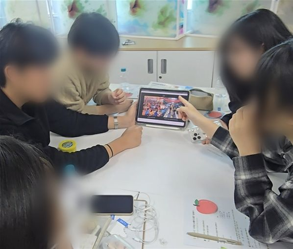

도시가 주변 교외보다 더 뜨거운 현상, 도시 열섬. 포장면이 열을 모으고, 녹지가 적고, 실외기·자동차가 열을 내뿜어요.
냉방이 늘면, 그만큼 전기가 더 필요해요.
폭염 → 냉방 → 전력 수요 증가. 이 연결을 데이터로 확인할 수 있을까요?
과학적 근거와 데이터로 문제를 정의하는 것부터 시작해요.
수업 현장

이 수업의 질문
기후·에너지 문제를 해결하려면
어떤 과학적 근거와 데이터가 필요할까?
그리고 그 답을 생성형 AI와 함께 작동하는 디지털 시제품으로 만들 수 있을까?
기후변화와 환경 문제의 원인·영향을 과학적으로 탐구하고, 해결 대상과 사용자 요구를 분석해 디지털 시제품의 핵심 기능과 초기 프롬프트를 설계해요.
생성형 AI와 바이브 코딩으로 시제품을 만들고, 기능 테스트와 수정 프롬프트로 개선하며, 해결 방안의 환경적·사회적 가치를 설명해요.
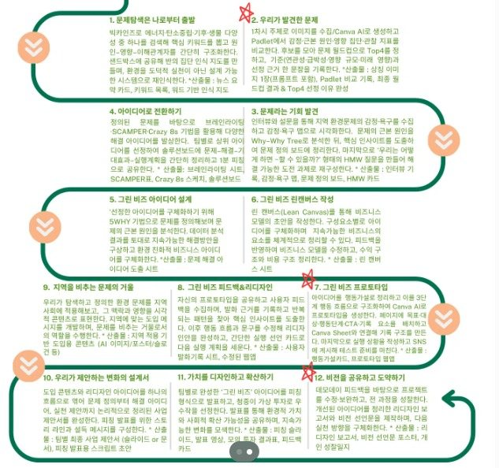
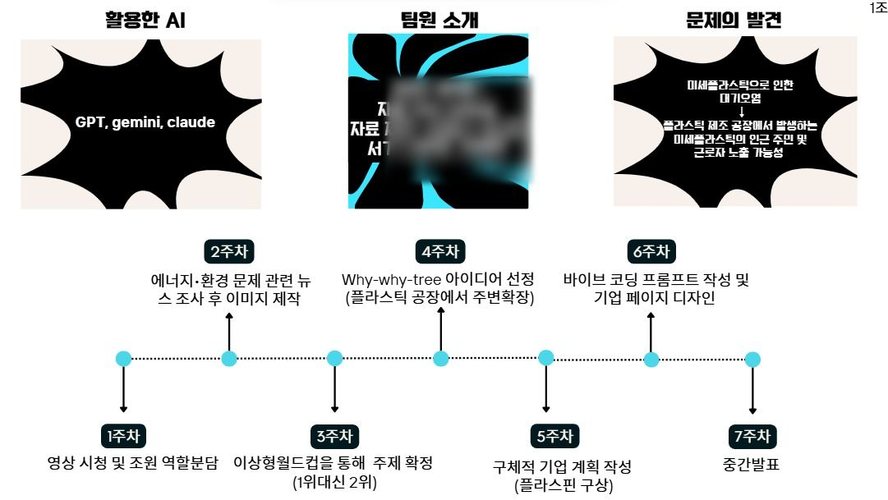
성취기준 · 「기후변화와 환경생태」
[12기환01-03] 기후변화 영향 사례 조사·발표 → 1차시 문제 정의 [12기환02-01] 기후위기의 주요 원인과 심각성 → 1차시 문제 정의 [12기환03-03] 탄소 저감 과학기술과 적용 사례 → 2차시 가치 제안 [12기환03-04] 국제사회 노력과 시민 참여 방안 → 2차시 가치 제안심화 연계(평가 제외): [12기환03-02] 사막화·산불·가뭄·홍수와 극복 노력 — 문제 월드컵에서 '극단적 기후재해'를 고른 모둠이 사례 조사에 활용해요. 프롬프트 설계·바이브 코딩은 정보 교과와 연계할 수 있어요.
에너지소양 주제
에너지안보 — 폭염기 냉방 전력 수요와 전력 수급 사회경제 — 냉방비 부담과 누가 더위에 취약한가핵심 아이디어
기후·에너지 문제를 과학적 근거와 데이터로 분석하고, 생성형 AI와 바이브 코딩으로 해결 방안을 구현해요. 시제품의 기능과 한계를 검토하며 반복해서 고쳐 나가는 과정에서 환경적·사회적 가치가 생겨요.
| 도구 | 약관상 이용 연령 | 고등학생 수업에서는 |
|---|---|---|
| ChatGPT(OpenAI) | 만 13세 이상, 만 18세 미만은 보호자 허락 | 보호자 동의를 받은 학생 계정 또는 교사 시연 |
| Lovable | 만 18세 이상(미만은 보호자 허락이 필요하다고 함께 적혀 있음) | 교사 화면 시연 권장 |
| Bolt.new(StackBlitz) | 만 18세 이상 | 학생 본인 계정 불가 — 교사 시연용 |
| Replit | 만 13세 이상, 만 18세 미만은 보호자 허락 | 보호자 동의를 받은 학생 계정 또는 교사 시연 |
| Google Sites·Sheets, Canva(교육용) | 학교가 관리하는 교육용 계정 | AI 기능 허용 여부는 학교 관리자 설정 확인 |
교사 계정 하나를 학생이 돌려 쓰는 방식은 계정 공유를 금지하는 약관에 걸릴 수 있어요. 대신 교사 화면에서 교사가 입력하고, 모둠은 프롬프트를 써서 건네는 시연 방식을 쓸 수 있어요.
학교에서 생성형 AI 접속이 막혀 있다면 — 모둠은 활동지에 v1·v2 프롬프트를 쓰고 아래 '프롬프트 진화 뷰어'로 비교해요. 시제품은 Google Sheets로 입력 칸 → 계산식 → 결과 칸을 만드는 계산표로 대신하거나, 교사가 미리 만들어 둔 시제품을 함께 테스트해요.
약관 확인: 2026. 11. 18. 각 서비스 이용 약관(Lovable Terms 'Minors', StackBlitz ToS 2.5, Replit ToS 1(b), OpenAI Terms of Use). 약관은 바뀌므로 수업 전에 다시 확인하고 날짜를 적어 두세요.
교사 시범 · 1차시 10분
도시 열섬은 도시가 주변 교외보다 더 뜨거운 현상이에요. 살펴볼 변수는 기온 · 녹지율 · 전력 사용량이에요. 막대를 움직여 세 변수가 어떤 방향으로 이어지는지 먼저 그림으로 생각해 봅시다.
햇빛은 같아도, 나무의 그늘이 포장면에 닿는 햇빛을 가리고 잎의 증발산(물이 수증기로 바뀌며 열을 가져감)이 표면을 식혀요.
이 그림을 프로그램으로 만든다면?
그림은 방향만 보여 줘요. 실제로 얼마나 달라지는지는 원자료로 확인해야 해요.
기상자료개방포털에는 기온만 있고 녹지율·전력 사용량은 없어요. 세 자료를 같은 지역·같은 기간으로 맞춰 모아야 비교할 수 있어요. (주소 확인: 2026. 11. 18.)
최적화로 한 걸음 — 목표: 여름철 냉방 전력을 줄이기 · 바꿀 수 있는 값(결정 변수): 녹지율 · 지켜야 할 조건(제약): 녹지로 바꿀 수 있는 면적과 예산.
질문: 목표 기온(또는 목표 전력 사용량)을 맞추는 가장 작은 녹지율은 얼마일까? 시제품에 이 질문을 넣으면 '보여 주기'를 넘어 '가장 좋은 값 찾기'가 돼요.
모둠 활동 1을 여는 게임 · 수업 PPT 13~18장
반 전체가 모은 16개 후보 중 둘을 비교해 더 먼저 풀어야 할 문제를 골라요. 4강에 오른 문제가 우리 반의 Top4예요.
어떤 기준으로 골랐나요? (PPT 4장의 선정 기준)
후보 카드 그림: 수업 PPT 14~15장 「에너지 월드컵 16강 후보」(생성형 AI 이미지).
수업 PPT의 예시 대진에서는 재생에너지가 16강(vs 에너지 접근성 문제) → 8강(vs 깨끗한 에너지 전환) → 4강(vs 정전) → 결승(vs 에너지 절약과 에너지 효율성)을 거쳐 최종 우승했어요. 모둠마다 자기 주제로 월드컵을 직접 만들어 링크를 패들렛에 공유했어요.
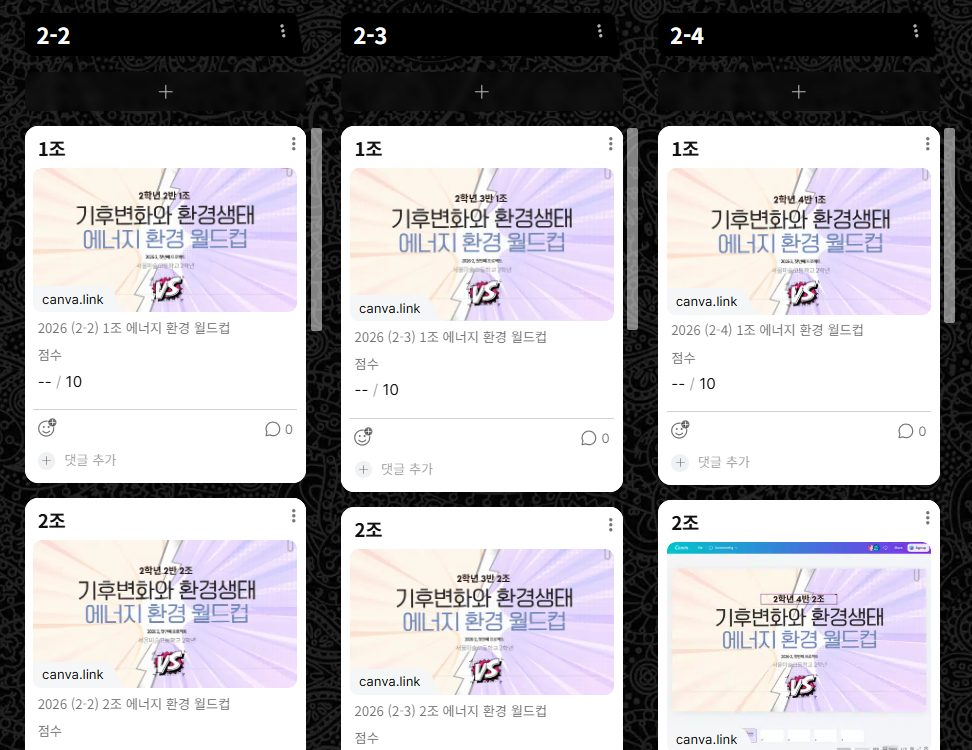
수업 진행
← → 키나 아래 버튼으로 넘겨요. 교사 모드를 켜면 발문·유의점이 보여요.
올여름, 우리 주변에서
더위·에너지 때문에 생긴 문제는 무엇이었나요?
모둠에서 일상에서 발견한 기후·환경 문제와 해결이 필요한 이유를 이야기해 봅시다.
기후·환경 문제의 원인과 영향을 과학적 근거로 설명하고, 해결 대상과 필요한 데이터를 분석해 디지털 시제품의 핵심 기능과 초기 프롬프트를 설계해요.
녹지가 줄어든 도시에서
냉방 에너지는 어떻게 될까요?
우리 모둠이 풀 핵심 문제 하나를 골라요
문제의 원인과 영향을 탐색하고, 해결이 필요한 대상과 사용자의 어려움을 구체화해요.
우리 문제와 관련된 자료가 원자료 사이트에 있는지 직접 찾아봐요. 문제 정의서에 탐구 질문 · 자료의 출처 · 해결 필요성을 적어요.
기온 · 기상자료개방포털 지역 전력 · 한전 전력데이터 개방포털 전력 수요 · 전력거래소 EPSIS 녹지 · 토지피복지도 공공데이터포털 Google Sheets초기 프롬프트는
지우지 말고 보관해요
모둠별 문제 정의와 초기 프롬프트를 공동 보고서에 기록하고, 다음 차시에 구현할 핵심 기능을 확정해요.
AI가 만든 시제품은
처음 의도한 기능을 모두 구현할까요?
지난 차시의 문제 정의서와 초기 프롬프트를 다시 확인해요.
생성형 AI와 바이브 코딩으로 디지털 시제품을 만들고, 기능 테스트와 프롬프트 수정으로 개선하며, 환경적·사회적 가치를 설명해요.
말(자연어)로 설명하면 AI가 웹사이트·앱·시뮬레이터를 만들어 줘요.
Lovable Bolt.new Replit예상과 다르게 작동하면,
AI에게 어떻게 다시 말할까요?
핵심 기능을 직접 실행하고, 입력값에 따른 출력 결과와 화면 작동 여부를 확인해요. 구현된 기능 · 미구현 기능 · 오류를 활동지에 적어요.
| 테스트 | 입력값 또는 실행 조건 | 예상 결과 | 실제 결과 | 판정 |
|---|---|---|---|---|
| 테스트 1 | … | … | … | ○ / △ / × |
발견한 오류를
수정 프롬프트로 바꿔요
필요한 기능을 추가하거나 입력·출력 방식과 알고리즘을 보완하고, 수정된 시제품을 다시 테스트해요.
다른 모둠이 우리 시제품을 써 보게 하고, 받은 말에서 세 가지를 하나씩 찾아요. (수업 PPT 39장)
시간이 너무 오래 걸린다.
참여 과정이 복잡함.
친구랑 같이 하면 재밌을 것 같음.
AI가 만든 결과 앞에서,
우리가 직접 판단한 것은 무엇인가요?
수업 PPT에서 보기
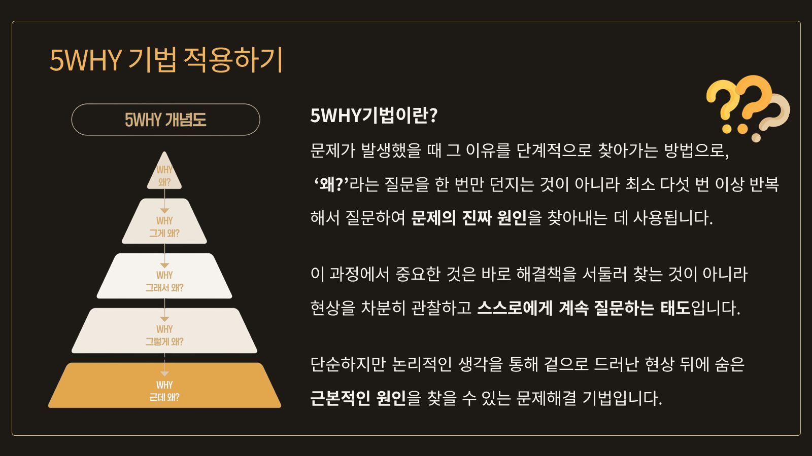
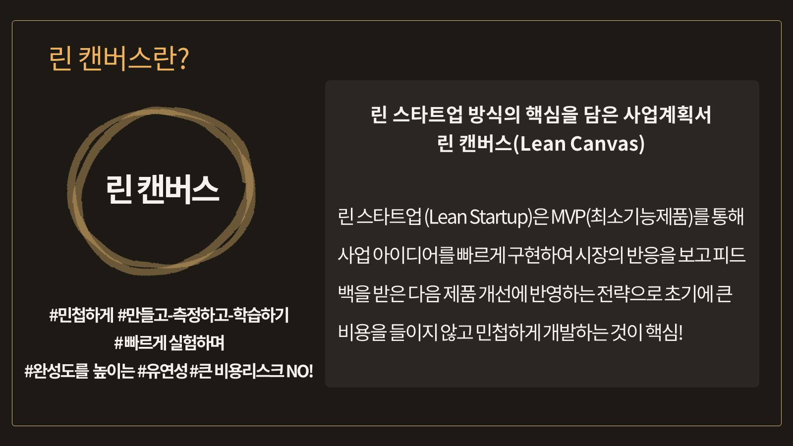
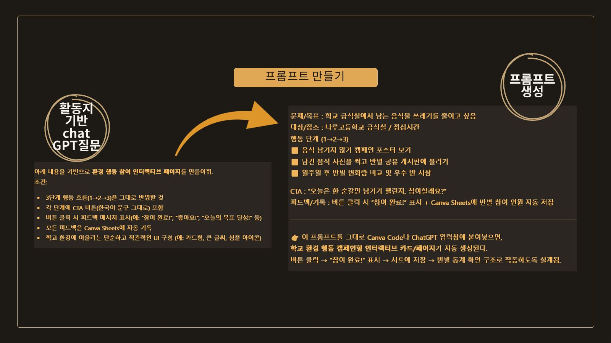
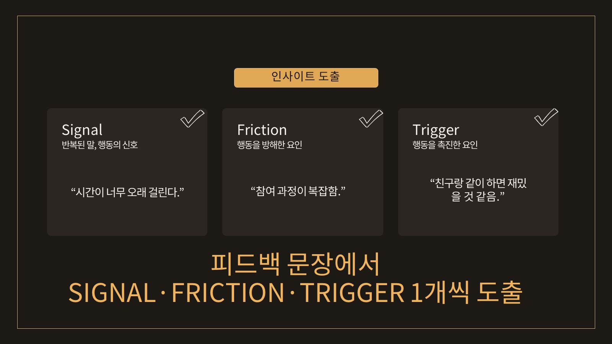
2차시 핵심 · 프롬프트 진화 뷰어
초기 프롬프트와 수정 프롬프트를 겹쳐 보면 우리가 무엇을 새로 판단했는지가 보여요. 더한 말 · 뺀 말
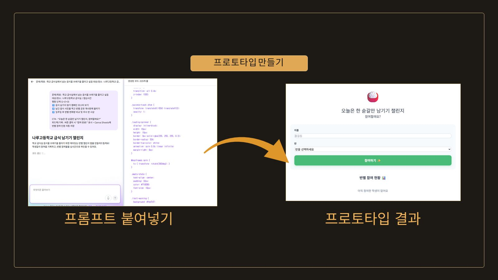
활동
적은 내용은 이 브라우저에만 저장돼요. 다 쓰면 아래 「활동지 형식으로 복사」로 공동 보고서(구글 문서·한글)에 붙여 넣어요. 종이 활동지는 수업 PPT에 들어 있어요.
문제의 원인과 영향을 조사하고, 과학적으로 확인할 수 있는 데이터와 변수를 찾아요.
사용자가 입력하거나 프로그램이 활용할 정보
계산·비교·예측하거나 조건에 따라 판단하는 방법
사용자에게 보여 줄 정보나 기능
함께 넣을 조건 (골라요)
| 입력값 또는 실행 조건 | 예상 결과 | 실제 결과 | 판정 | |
|---|---|---|---|---|
| 테스트 1 | ||||
| 테스트 2 | ||||
| 테스트 3 |
구현된 기능과 기대 효과를 구분하고, 실제로 쓰려면 어떤 검증이 더 필요한지 적어요.
참고: 전 세계 데이터센터는 2024년 약 415 TWh(세계 전력 소비의 약 1.5%)를 썼고, 2030년에는 약 945 TWh로 두 배 넘게 늘 전망이에요. — IEA 「Energy and AI」(2025), 기준 시나리오
실제 수업에서 쓴 기록
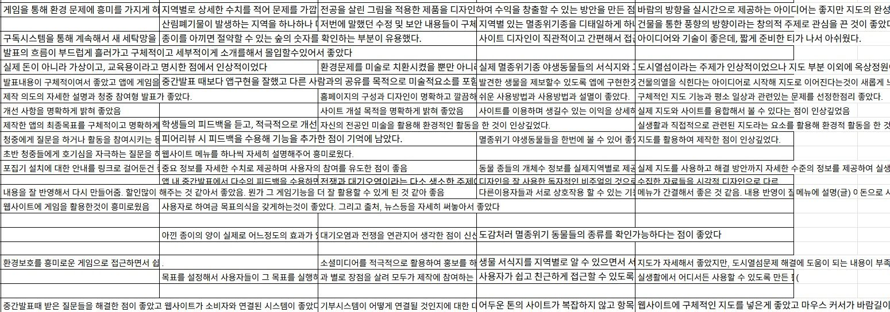

평가
문제 정의의 타당성, 데이터 활용의 적절성, 프롬프트를 고치며 스스로 내린 판단이 평가의 중심이에요.
A·B·C는 이 과제의 채점 수준이에요. 학기 성취도(A~E)는 학교 성취평가 기준에 따라 따로 매겨요. B·C 칸은 활동지·기록에서 바로 확인할 수 있는 모습으로 적었어요.
방법: 관찰평가 및 문제 정의·프롬프트 설계 기록 평가
| 관찰 기준 | A | B | C |
|---|---|---|---|
| 문제 정의 | 원인과 영향을 과학적 근거로 설명하고, 해결하려는 핵심 문제를 구체적으로 정의한다. | 핵심 문제를 한 문장으로 정했으나, 원인·영향 중 한쪽만 근거(자료·과학 개념)와 함께 적었다. | '지구 온난화'처럼 넓은 주제로만 적어 관찰할 대상이 정해지지 않았거나, 원인·영향을 근거 없이 적었다. |
| 데이터와 변수 탐색 | 관련 데이터·변수를 적절히 선정하고, 자료의 출처와 활용 목적을 설명한다. | 변수를 2개 이상 적었으나 출처(사이트·자료 이름·확인 날짜) 가운데 일부가 빠졌다. | 변수를 1개 이하로 적었거나, AI가 알려 준 수치를 원자료 확인 없이 옮겨 적었다. |
| 해결 대상과 가치 발견 | 문제를 겪는 대상의 어려움을 구체적으로 파악하고, 환경적·사회적 가치를 설명한다. | 사용자를 정했으나 그 사용자가 겪는 어려움(언제·어디서·무엇이)이 적혀 있지 않다. | 사용자를 '모든 사람'처럼 정하지 않아, 누구의 어떤 문제인지 기록에 나타나지 않는다. |
| 초기 프롬프트 설계 | 입력 데이터·처리 과정·출력 결과를 구체화해 실행 가능한 초기 프롬프트를 작성한다. | 입력·처리·출력 중 하나가 빠졌거나, '좋게', '알아서' 같은 모호한 요청이 남아 있다. | 만들 것의 이름만 적고 입력·처리·출력을 적지 않았다. |
방법: 관찰평가 및 프롬프트 수정 기록·디지털 시제품 평가 · '환경적 가치 제안' 줄이 [12기환03-03]·[12기환03-04]와 직접 이어져요.
| 평가 기준 | A | B | C |
|---|---|---|---|
| 디지털 시제품 구현 | 초기 설계를 바탕으로 핵심 기능을 구현하고, 입력 데이터와 출력 결과의 관계를 설명한다. | 시제품이 열리지만 핵심 기능 중 하나 이상이 작동하지 않고, 입력과 출력의 관계를 한 가지 예로만 말한다. | 시제품 화면이 만들어지지 않았거나, 어떤 값을 넣으면 무엇이 나오는지 말하지 못한다. |
| 기능 테스트와 오류 발견 | 핵심 기능을 다양한 조건에서 테스트하고, 예상·실제 결과를 비교해 오류·개선점을 구체적으로 설명한다. | 테스트를 1~2개 조건으로만 했거나, 기록표의 예상·실제 결과 칸 일부가 비어 있다. | 기록표에 판정만 적고 입력 조건이나 결과를 적지 않았다. |
| 프롬프트 수정과 개선 | 오류·개선점을 구체적 조건과 함께 수정 프롬프트에 반영하고, 다시 테스트해 변경 이유와 효과를 설명한다. | 수정 프롬프트에 '어떤 조건에서 무엇이 달랐는지'가 빠졌거나, 수정 후 다시 테스트한 기록이 없다. | v1과 v2가 거의 같거나, 오류 조건 없이 '다시 해 줘'처럼만 요청했다. |
| 성찰 | 초기·수정 프롬프트를 비교해 모둠이 직접 판단·결정한 내용과 근거를 구체적으로 설명한다. | 바뀐 부분을 나열했으나, 바꾼 이유를 테스트 결과와 연결한 것이 1개 이하다. | 'AI가 해 줬다'처럼 적어 모둠이 판단한 내용이 기록에 나타나지 않는다. |
| 환경적 가치 제안 | 해결하려는 문제와 사용자 가치를 구체적으로 설명하고, 이어지는 탄소 저감 기술·적용 사례 1개(출처 포함)와 시민 참여 방법을 제시하며, 기대 효과의 근거와 한계를 구분한다. | 가치는 설명했으나 기술 사례의 출처가 없거나 시민 참여 방법이 빠졌고, 기대 효과를 검증된 사실처럼 적었다. | 기능만 나열하고 환경 문제·탄소 저감과의 관련성을 적지 않았다. |
출처: 최종보고서 별첨 프로그램 4 교수·학습 지도안(A 문장은 화면에 맞게 줄임. B·C 문장과 2차시 '환경적 가치 제안'의 기술 사례·시민 참여는 성취기준 정렬을 위해 웹에서 보완).
수업에서 나온 것들


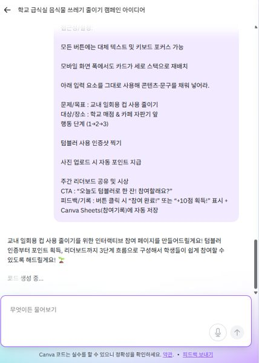
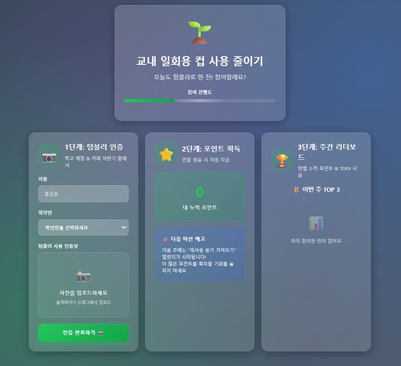

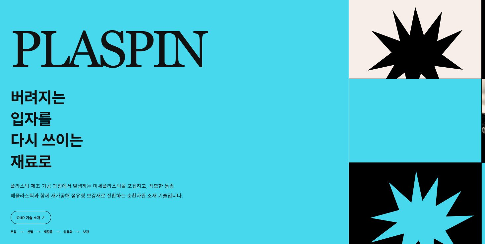
출처: 최종보고서 Ⅱ-4 연구 개발 결과 사진, 수업 PPT 화면.